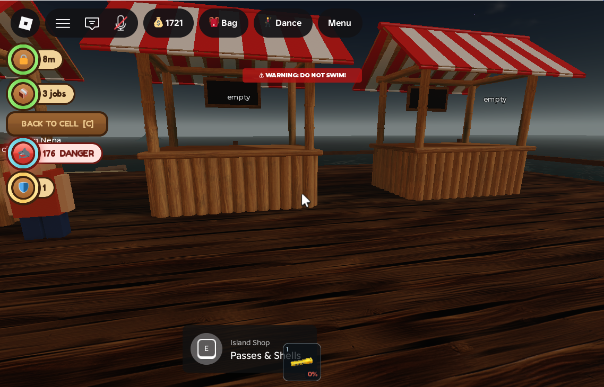
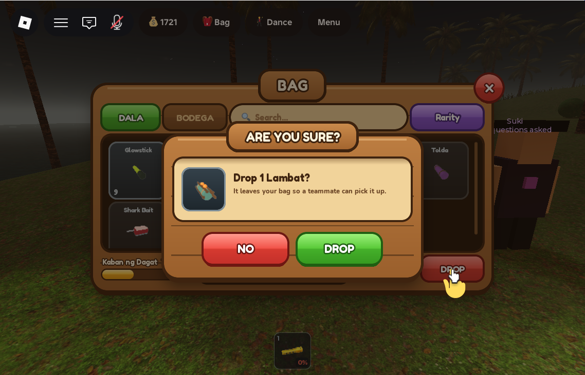
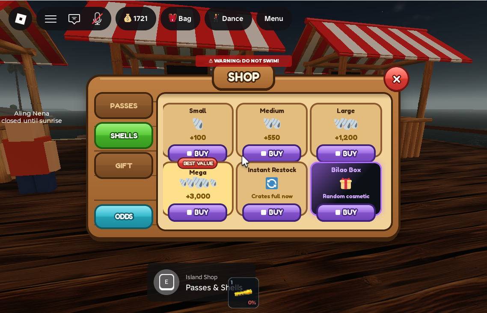

First-person desktop players can always use the UI (CursorGuard, BACK TO CELL [C])
What was asked
The owner asked: if a player on desktop is in first person and opens a bodega (the Bag) or any other UI, will they get stuck? They then said to confirm it and make sure no player can get stuck.
The problem
On a computer, in first person or with shift lock on, the Roblox camera sets UserInputService.MouseBehavior = LockCenter every frame. The cursor stays pinned to the middle of the screen and is hidden, so a button on screen cannot be clicked. The player can still walk and can always scroll out of first person (unless a script forces LockFirstPerson). Even so, a menu whose only way out is a button would feel stuck.
Menus that go through ReplicatedStorage.PanelUtil were already safe. While any registered panel is open, PanelUtil shows a Modal button and binds a render step at Camera + 10 that sets MouseBehavior = Default every frame, which wins over the camera. Registered panels: help, admin, tasks, palengke, tolda, music, dance, cavemap, account, bag, visitors, roster, settings, islandshop, and the redesign's "ARE YOU SURE?" dialog (kitdialog).
An audit of every ScreenGui turned up screens that show themselves (pushed by the server or opened by a prompt) without going through PanelUtil. For a first-person desktop player their buttons were unreachable:
BoatGui.HirePanel(boat hire),CaveSignGui(write on a cave slate),JusticeGui.VoteandJusticeGui.ServiceChoice(jail vote and the service choice),ReviveGui's WAKE UP button,RoleGui.Panel(the work board),PhotoGui(photo mode).- The Shipwreck minigame screens:
Lobby,Mash(the 4-second tap race),Eliminated,Spectate,Result. - The status column's BACK TO CELL button, which is shown for the whole community-service sentence.
What changed
1. PanelUtil.Watch: free the cursor for a screen PanelUtil does not own
PanelUtil.Watch(name, isOpenFn) registers a passive entry with no-op open and close. The existing 0.25 s heartbeat sync() polls isOpenFn. While it returns true, the cursor is freed exactly as for a real panel, and it is handed back to the camera when the screen goes. PanelUtil.Changed still fires for these entries. PanelUtil.IsPassive(name) lets a listener tell a watched screen from a real menu.
2. New CursorGuard LocalScript
StarterPlayer.StarterPlayerScripts.CursorGuard hands each self-showing screen above to PanelUtil.Watch as watch:boathire, watch:cavesign, watch:vote, watch:servicechoice, watch:revivewake, watch:roleboard, watch:photomode, watch:shipwrecklobby, watch:shipwreckmash, watch:shipwreckout, watch:shipwreckspectate and watch:shipwreckresult. A screen counts as up when its ScreenGui is enabled and every frame on the path is visible (for ReviveGui, when the WakeButton descendant is visible). Each check is wrapped in pcall. None of the owning scripts were touched.
Persistent HUDs (status column, hotbar, top bar, shark alert, timers) are deliberately not watched. Freeing the cursor for a whole sentence or match would break first-person mouse-look.
3. The status column ignores watched screens
StatusHud hides its left column while a menu is open so it does not overlap it. It now skips passive entries too (if name == "kitdialog" or PanelUtil.IsPassive(name) then return end). This keeps the jail timer and jobs visible during a vote or the service choice.
4. BACK TO CELL answers to the C key

KEY_BACK = Enum.KeyCode.C. WhenUserInputService.KeyboardEnabled, the label gains " [C]" and the button widens fromBADGE + 70toBADGE + 102.InputBeganfiresRemotes.RequestJailAction:FireServer("backToCell")only while the button is visible and only when the key was not already processed by the game. Typing "c" in chat does not trigger it.- C was free. The only other uses in the place are Roblox's own admin freecam (Shift+P, then C/Z for up/down). No game script binds C.
- Touch players are unaffected: the label and size are unchanged when there is no keyboard.
All changes
| DataModel path | What | |
|---|---|---|
| edited | ReplicatedStorage.PanelUtil | Added PanelUtil.Watch(name, isOpenFn) and PanelUtil.IsPassive(name). Nothing else changed. |
| new | StarterPlayer.StarterPlayerScripts.CursorGuard | LocalScript, 12 watched screens (listed above). |
| edited | StarterPlayer.StarterPlayerScripts.StatusHud | Skips passive PanelUtil entries when hiding the column; BACK TO CELL shows "[C]" on a keyboard and the C key fires backToCell. |
No new remotes and no new attributes (the existing RequestJailAction remote is reused). No world, terrain or server-script changes.
Testing
One playtest with Studio's Device Simulator off (a desktop client: TouchEnabled=false, MouseEnabled=true). Player.CameraMode = LockFirstPerson was set on the client so the camera could not be zoomed out. MouseBehavior was sampled 4–6 times at 0.1 s intervals after each step:
| Step | MouseBehavior |
|---|---|
| Baseline, first person, nothing open | LockCenter |
Bag opened with the N key (BodegaUp set locally) | Default ×6, MouseIconEnabled true |
| Lambat selected → DROP → "ARE YOU SURE?" dialog; Bag closed with N, dialog alone still open | Default |
| Clicked NO | LockCenter; dialog closed; the Lambat was still in the bag |
| Island Shop opened with E at the Palengke Market stall | Default ×4 |
| Shop closed with its X button (real mouse click through the MCP) | LockCenter |
JusticeGui.Vote made visible locally | Default ×4 |
| Vote hidden | LockCenter ×4 |
ShipwreckGui.Mash made visible locally | Default ×4 |
| Mash hidden | LockCenter ×4 |
Jail attributes set locally (Jailed, JailDays 0.3, ServiceJobsLeft 3, ServiceTrack vendor) | Button visible, label "BACK TO CELL [C]", 148×32 |
Pressed C with a server-side probe on RequestJailAction.OnServerEvent | Server received "backToCell"; no errors in the output (the player was not really jailed, so the server ignored it) |


The playtest ended by kicking the player from the Server datamodel, which saves and releases the session lock. The client-side test attributes were cleared first, and CameraMode was set back to Classic.
Unverified / known gaps
- Of the 12 watched screens, only
VoteandMashwere exercised live, by toggling visibility locally. The other ten use the same code path, so they are checked by that path only. Nobody played a real boat hire, cave slate, service choice, revive, role board, photo spot or full Shipwreck round in first person. - The watch is polled every 0.25 s, so a screen that pops up can take up to a quarter of a second to free the cursor.
- Screens that show only information with no button (zone info, shark alert, timers) are intentionally not watched.
- If a future screen shows itself without going through PanelUtil, add it to the
WATCHlist inCursorGuard, or register it with PanelUtil.
- The test account (
Player_8745800367) received one extra Lambat throughServerStorage.GiveToBagfor the DROP test, and it was saved. Nothing else in the saved data changed. - At the start, a stale DataStore session lock (left by a playtest stopped without a kick) was cleared, at the owner's request, by setting
Meta.ActiveSession=false. - Studio's Device Simulator was turned off for the desktop test and has been turned back on (iPhone 6 Plus, 736×414 landscape).
- No quick-test values were left in any script. Nothing needs reverting.
- The place has not been published; the owner saves and publishes.